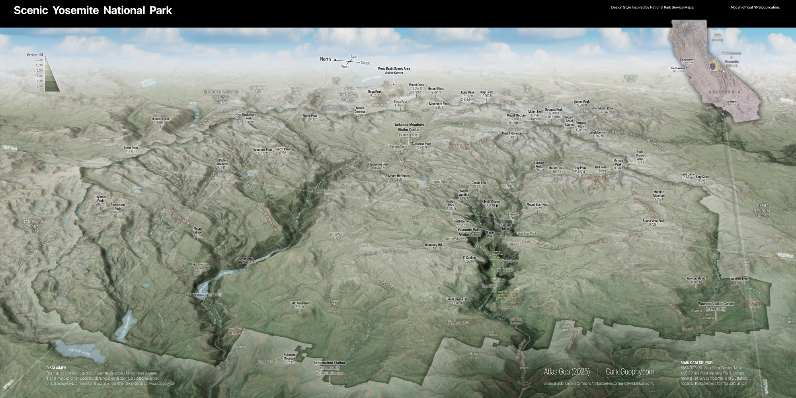
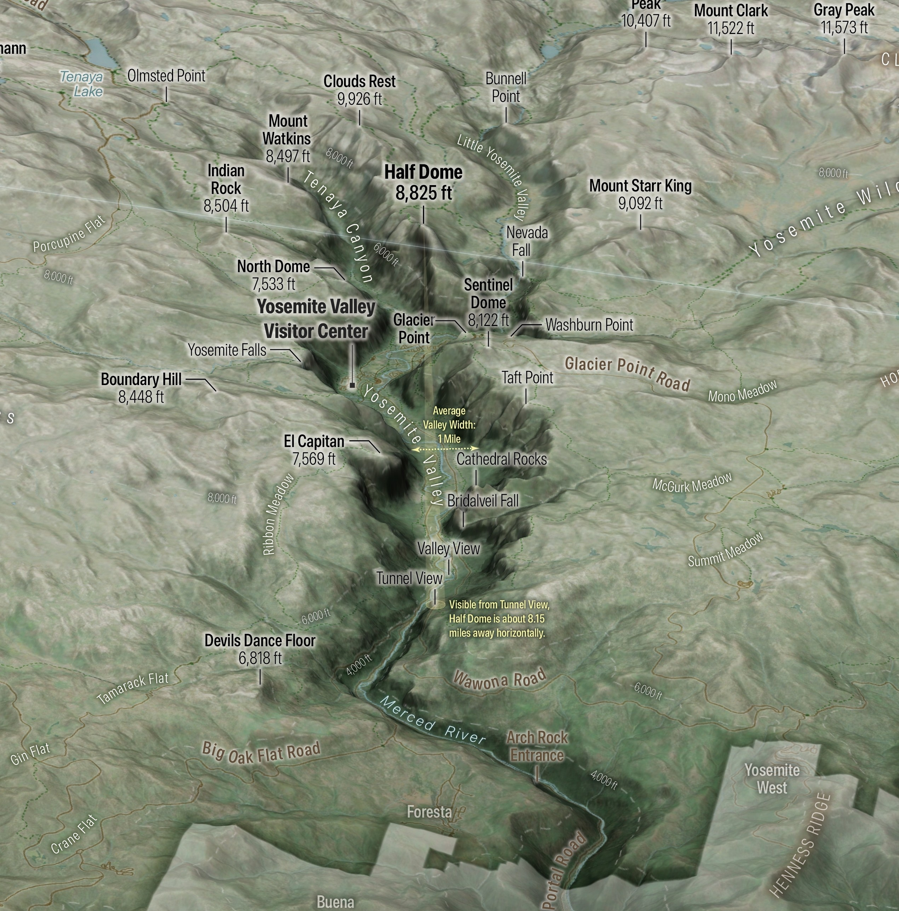
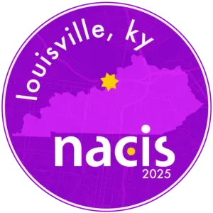
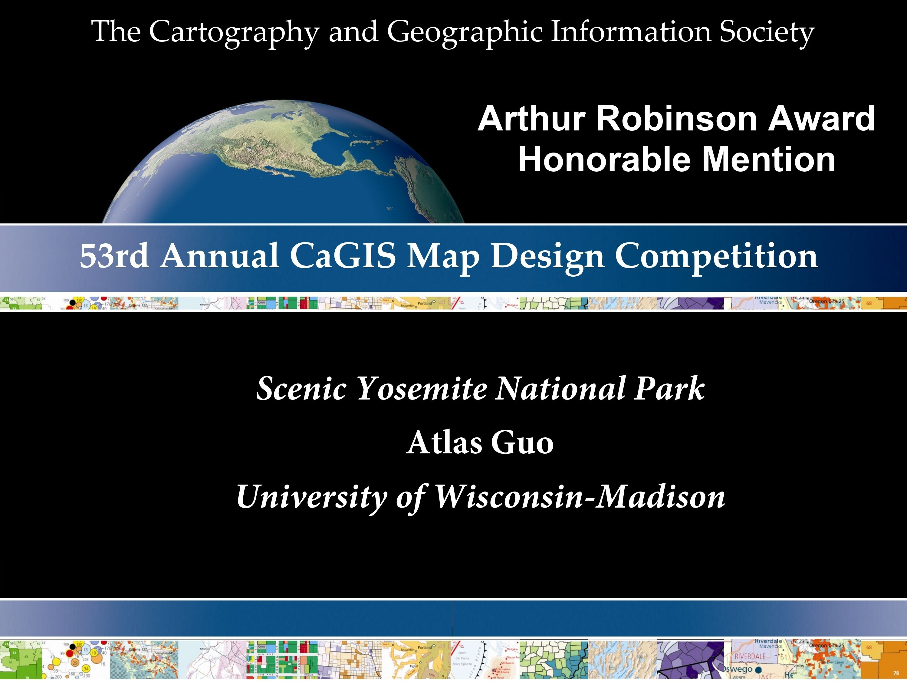
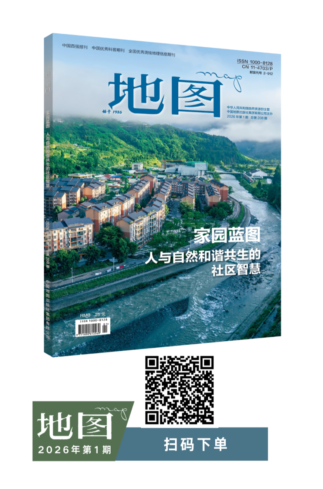
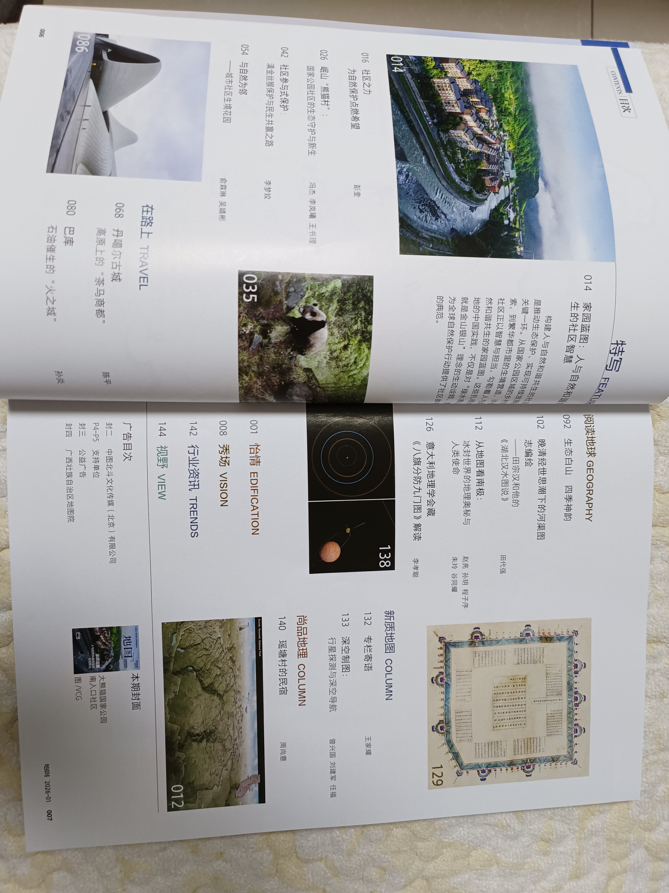

Scenic Yosemite National Park
A cartographic tribute to the birthplace of the national park idea
Winner of
Base & Reference Map, Wisconsin Land Information Association
2026 Map Contest
Honorable Mention, Arthur Robinson Print Map Award, 53rd CaGIS Map Design
Competition

Download Compressed ImageDownload Full-Size Image
This map was created to convey the scenic view and geographic structure of Yosemite National Park
through an immersive, oblique perspective. After visiting Yosemite Valley in July 2025, I aimed to
design a map that captures not only iconic landmarks such as Half Dome and El Capitan, but also the
broader Sierra Nevada context that shapes Yosemite's dramatic landscapes. The goal was to balance
geographic accuracy with visual storytelling, allowing viewers to intuitively understand and appreciate
the beauty of the landscape.
For the viewing perspective, I chose a west-to-east oblique projection. This orientation follows the
natural pattern of the terrain and also mirrors the direction from which most visitors, myself
included, enter the park's core area, Yosemite Valley. I hope it imposes minimal additional cognitive
load for spatial interpretation. This orientation is further supported by the locator map, which
provides explicit cues for viewing direction and extent, as well as by the simulated graticules with
built-in shading effects. The oblique bird's-eye view is visually reinforced by a synthetic sky
background, although this choice challenges the representation of scale. After weighing alternatives, I
placed distance and area measurements exclusively within the orthographic locator map, and added
explicit distance and width annotations within Yosemite Valley itself. By including distances to the
famous Half Dome, the map literally echoes the experience of Tunnel View, one of the most iconic
visitor viewpoints.

For terrain rendering, I combined ArcGIS Pro's multi-scale hillshading techniques with Eduard
Swiss-style shaded relief, supplemented by a little bit of hypsometric tinting and textures from
remote-sensing imagery. Together, these elements aim to convey both the region's vegetation patterns
and its distinctive granite-dominated surface character. Also, the Yosemite Valley is intentionally
emphasized visually. This decision is not driven by personal preference, but by the desire to
strengthen reader immersion and spatial engagement with the park's most recognizable landscape.
Throughout the design, there are deliberate stylistic salutes to National Park Service's cartographic
language, including the black header bar with an overlaid locator map, the green gradient of park
boundaries, and some other stylistic cues. However, this map is not an official publication, nor is it
intended to function as a comprehensive visitor or navigational map. (Official and up-to-date
information is available from the NPS
website.) Accordingly, the depiction of
manmade or thematic features is intentionally restrained. Greater emphasis is placed on landform
representation, with particular care taken to include more topographic features. In addition to
numerous named peaks, broad distinctions between high mountainous terrain and lower valleys are
expressed through brown and green tonal variation.
In summary, this map is intended as an illustrative and experiential portrayal of Yosemite. For those
who appreciate the park, I hope it offers a visually engaging way to rediscover its landscape and
structure.
(Data Source: 30-Meter SRTM Digital Elevation Model, ArcGIS Online World Imagery & World Hillshade,
National Park Service's Yosemite Page and NPS Datastore, additional peak elevations from
NaturalAtlas.com)

This map was displayed in the map gallery (map poster) of North American Cartographic Information Society (NACIS) 2025 annual meeting at Louisiville, KY (Oct 15-17). Check out my other entries in the map gallery!
This map is the Honorable Mention of Arthur Robinson Print Map Award in 53rd Annual CaGIS Map Design Competition.

This map is the Winner of Base & Reference Map Category in Wisconsin Land Information Association (WLIA) 2026 Map Contest.

This map is featured in the VISION column of Map Magazine (China), 2026 Issue 1. The Map Magazine is supervised by the Ministry of Natural Resources of China and published by China Cartographic Publishing House. It is one of China’s most prominent publications dedicated to maps, cartographic communication, and map culture.

The editor shared that, in previous issues, this column primarily invited industry reviewers to interpret selected map works. Beginning in 2026, it aims to bring in more perspectives from mapmakers themselves, including their design ideas, creative processes, and cartographic experience. I am deeply honored to have been invited to contribute to this new direction.

